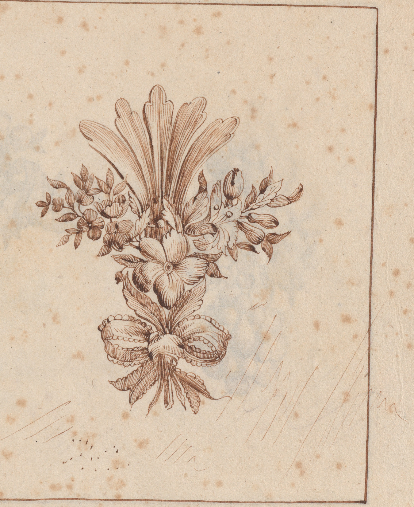

I can't findthe drops.
Brown ink
1770 or after

At left, feathers bend over flowers and a looping ribbon. At right, a fan rises above a flower and bow. Pale strokes continue from the right arrangement into the open paper.
The record names two drop earrings, a girandole, two brooches, and an acanthus ornament. It describes a bird, a circle, and three hanging drops in the unfinished girandole, and says the engraving is fully copied here. I cannot match those forms to the visible lines with confidence.
Look closer at the marks beside the right design

The Met maps the left drawing to plate 6 and the right to plate 7. Its text names an unfinished girandole and says the source engraving is fully copied here; I still cannot place its bird and guide marks with confidence.
Rijksmuseum has a high-resolution image of series no. 6/12, a sheet visibly numbered 6. Its upper-left aigrette fits page 3's left drawing and the Met's mapping; the sheet's other motifs also meet the Met's inventory for no. 6. DIVA's brochure captions its picture as print no. 6 from the Paris 1770 book and credits the reproduction to DIVA. Its lower-right flower-and-plume group still seems closer to page 3's right drawing, but the visible arrangements differ. DIVA's bound album includes the 1770 print series and a separate G. Hue facsimile from 1907; an exhibition list indexes a related chatelaine print as P2018/1/6. This context does not explain the difference between the two images.